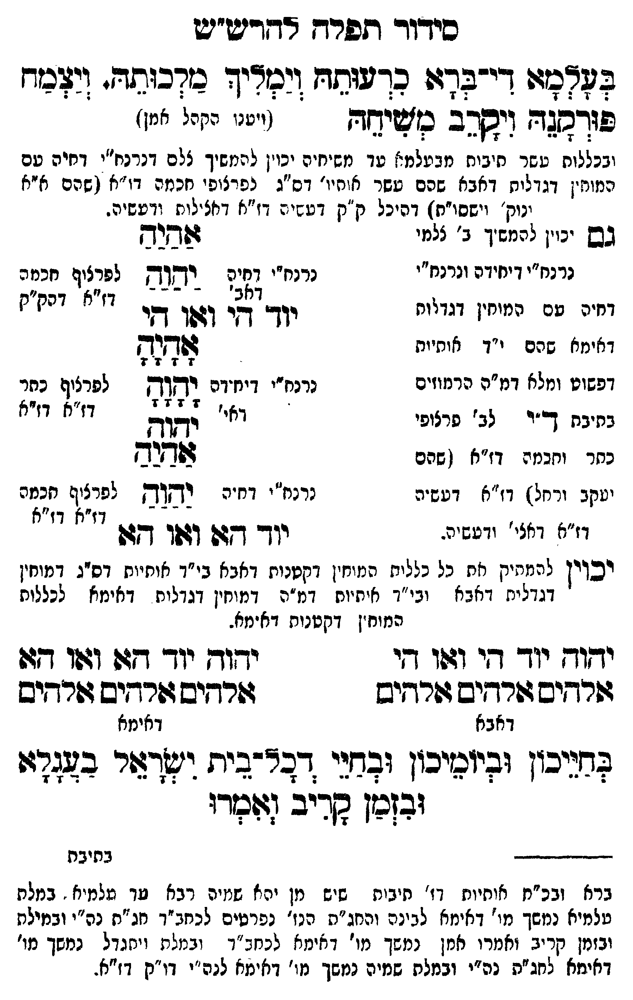

Neue Klartextfassung
בעלמא די ברא כרעותה וימליך מלכותה ויצמח פורקנה ויקרב משיחה (ויענו הקהל אמן) [ובכללות עשר תיבות מבעלמא עד משיחה יכוין להמשיך ל"ם דנרנח"י דחיה עם מוחין דגדלות דאבא שהם עשר הויות דס"ג לפרצופי חכמה דז"א (שהם חו"ב ונוק' וישסו"ת) דהיכל ק"ק דעשיה דז"א דאצילות ודעשיה. [?]] [גם יכוין להמשיך ג' צלמי נרנח"י דיחידה ונרנח"י דחיה עם המוחין דגדלות דאימא שהם י"ד אותיות דפשוט ומלא ומלא דמ"ה הרמוזים בתיבת ד"י דג' פרצופי כתר וחכמה דז"א (שהם יעקב ורחל) דז"א דעשיה דז"א דאצילות ודעשיה. [?]] === טבלה === [נרנח"י דחיה; לפרצוף חכמה דז"א דק"ק] אַהַיַהַ יַהַוַהַ יוד הי ואו הי [נרנח"י דיחידה; לפרצוף כתר דז"א] אָהָיָהָ יָהָוָהָ יהוה אהיה [נרנח"י דחיה; לפרצוף חכמה דז"א] אַהַיַהַ יַהַוַהַ יוד הא ואו הא === סוף טבלה === [יכוין להמתיק את כל כללות המוחין דקטנות דאבא ב"ך אותיות דס"ג דמוחין דגדלות דאבא וב"ך אותיות דמ"ה דמוחין דגדלות דאימא בכללות המוחין דקטנות דאימא.] === טבלה === [דאבא] יהוה יוד הי ואו הי אלהים אלהים אלהים [דאימא] יהוה יוד הא ואו הא אלהים אלהים אלהים === סוף טבלה === בחייכון וביומיכון ובחיי דכל בית ישראל בעגלא ובזמן קריב ואמרו:
Original gegen neue OCR · Niqqud für Vergleich ausgeblendet
Original
בעלמא די ברא כרעותה וימליך מלכותה ויצמח פורקנה ויקרב משיחה (ויענו הקהלK171-001 אמן) [ובכללות עשר תיבות מבעלמאK171-002 עד משיחהK171-003 יכוין להמשיך ל"םK171-004 דנרנח"י דחיה עם מוחין דגדלותK171-005 דאבא שהם עשר הויותK171-006 דס"ג לפרצופי חכמה דז"א (שהם חו"ב ונוק' וישסו"ת)K171-007 דהיכל ק"ק דעשיהK171-008 דז"א דאצילות ודעשיה. ] [גם יכויןK171-009 להמשיך ג'K171-010 צלמי ∅K171-011 נרנח"י דיחידהK171-012 ונרנח"י ∅K171-013 דחיה עם המוחין דגדלותK171-014 דאימא שהם י"ד אותיות ∅K171-015 דפשוט ומלאK171-016 ומלא דמ"ה הרמוזים בתיבת ד"י דג'K171-017 פרצופי כתר וחכמהK171-018 דז"א (שהם יעקבK171-019 ורחל) דז"א דעשיה דז"א דאצילותK171-020 ודעשיה. ] === טבלה === [נרנח"י דחיה; לפרצוף חכמה דז"א דק"ק] אהיה יהוה יוד הי ואו הי [נרנח"י דיחידה; לפרצוף כתר דז"א] אהיה יהוה יהוה אהיה [נרנח"י דחיה; לפרצוף חכמה דז"א] אהיה יהוה יוד הא ואו הא === סוף טבלה === [יכויןK171-021 להמתיק אתK171-022 כל כללות המוחיןK171-023 דקטנות דאבא ב"ך אותיותK171-024 דס"ג דמוחין דגדלותK171-025 דאבא וב"ך אותיות דמ"הK171-026 דמוחין דגדלות דאימא בכללות המוחיןK171-027 דקטנות דאימא.] === טבלה === [דאבא] יהוה יוד הי ואו הי אלהים אלהים אלהים [דאימא] יהוה יוד הא ואו הא אלהים אלהים אלהים === סוף טבלה === בחייכון וביומיכון ובחיי דכל בית ישראל בעגלאK171-028 ובזמן קריב ואמרו:K171-029
OCR · fehlbar
כידור תפרח דדריש"יט בפשמצ דיזלדוו כךעוחדו וידיך בזדכותד. (יצכד פורגצד וישהב בייחד (יטנן קז:K171-001 אמן) ובכללות טשר חיבות מבעלמ:'K171-002 עד משיחיהK171-003 יכוין להמשיך צלםK171-004 דנרנח"י דחיה טם המוח.ן דגדליחK171-005 דאבא שהם עשד אוחיו'K171-006 דס"ג נפרצופי זכמה דו"א ן שהם א"א נוק' יישסו"חץK171-007 דהיכל ק"ק דט:י.:K171-008 דז"א דיזצלות (דעשיה. גש ינויןK171-009 להמשיך ב'K171-010 צלמי ג[שוסK171-011 נרנח"י דייזידהK171-012 ונרנח"י נרנח"י 1:47 דלבש לפנציף חכקהK171-013 דחיה עם המוחין דגדיוח לא י' זנח"ז ) יוד' דזי וגלך שיK171-014 דאימא שהם י"ד אותיות לו(דצדK171-015 דפשוט ∅K171-016 ומלא דמ"ה הרמוזים נרנח"י דיח'דה דקח לפרציח כחר יבת ק-"ד לב'K171-017 פרצופי ואי' זג(K171-018 דז"א ד"א בתיבח (- ב' פרצופ שבלל[ כחר וחכמג דז"א ( שהם שזד[יס יטקבK171-019 ורחל) דז"א דטש'ה נרנח"' וח"ה דשחוק לפרצ(ף חבמה וז"ל דאצי'K171-020 ודעשיה. יך 94 141 7 ו" וז"א יכויןK171-021 להמתיק קתK171-022 כל כלליח המוח"ןK171-023 דקטנות דאבא בי"ד אוחיוחK171-024 דס"ג דמוחין דגדליתK171-025 דאבא ובי"ד איחיות דנ"הK171-026 דמוחין דגדלות דאימא לכללות המוח"ןK171-027 דקטנות דאימא. ישוךץ יוך דזי וגו די י דזדז יוך דץגד (ז(ו דזו דורשים גשרחיש גשרחיש זזרחיש זורחיש פרחיש דאבא דאימא לדניכזן ועיוטיכון ובחני דבצ-ביחז שצור בזבגך:ו ובזכן קריב (צזשזדו --ג--- בחיבת ברא ובכ"ח אוחיוח דז' תיבוח שיש מן ירא שמיה רבא עד שלמיא - במלת טלמיא נמשך מי' דאימא לבינה והחג"ת הנז' נפרטים לכחב"ד חג"ח נה"י ובמילתK171-028 ובזמן קריב ואמרו אנן נמשך מו' דאימא לכחב"ד ובמלת ויחנדל נמשך מו' דאימא לחג"ת נה"י ובמלת שמיה נמשך מו' דאימא לנה"י דו"ק דז"א.K171-029